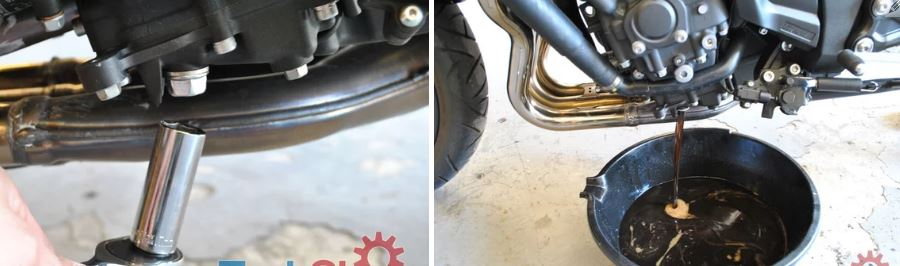
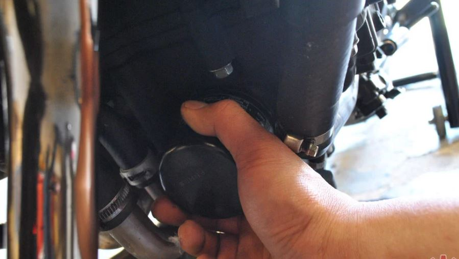
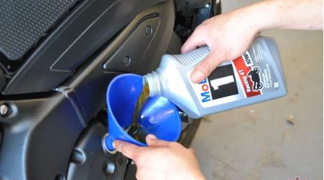
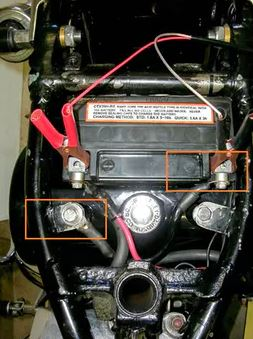

OIL / BATTERY 
Then unscrew your engine's oil cap so that air can pass through the engine. This way, the oil can drain out properly from your engines oil drain hole.
Warm UpTurn on the bike and let it warm up for several minutes so that the oil is warm. This helps the flow of the oil when draining.
Drain Bolt Removal To remove the drain bolt, simply use your socket wrench. If it is hard to remove, try using a rubber mallet on the socket handle.
Oil Filter Remove the oil filter by hand. If your bike comes with the kind that has a nut head on it, the removal should be easier.
Sit and WaitNow that you have the drain bolt and the filter off, let all the oil from the engine drain out. Use paper towels on parts where some of the oil may leak onto. In this case, some was leaking on the headers.
Oil Filter InstallDip your finger into the new oil container and rub some onto the new oil filter's o-ring. This will ensure a nice seal when installing the new oil filter.
Fortunately, the new filter came equipped with a nut head. The same wrench I used on the drain bolt also works on the filter.
Fill Fill the right amount of oil according to your owner's manual. In this case the manual specifies 3.28 US qts. After filling the bike, turn on the engine and check the oil level through the sight glass. Add more bit more oil if needed.
Enjoy!!!Remove the bike off the stand and enjoy your ride.
- Every 1000km / 500km or 1 month
Removing a battery is a fairly simple process on a motorcycle, but it can vary wildly from bike to bike. Having a little knowledge can help you better understand the process before you begin.
Step 1. Read the manual (RTFM)The most important tool in your toolbox lives between your ears. People have this idea that good mechanics “don’t need” to use a book. This is a silly idea. Sure, there are times when a job is familiar enough that a book is not needed, but those times are never the first time. Buy a factory service manual and read it. An aftermarket manual like we sell at RevZilla is a great supplement to a factory manual, but the factory manual always offers the final word.
Step 2. Find the battery, and then access itThis should be well covered in your service manual, but you need to know where to find your battery. I’m gonna rattle off a few of the locations I’ve found batteries over the years. Ducati Multistrada and Yamaha FJR1300: Inside the upper right fairing. Yamaha YZF-R6 and FZ6: under the fuel tank. Harley-Davidson Sportster: Under the seat. Harley Shovelhead: hanging way off the right side of the bike. And on customs? Forget it. In the tail section, hidden between the primary pulleys, under the bike — you name it, and I have seen a battery hiding there.
Under the seat, under the sidecovers, and under the tank are all good first guesses, but a manual will tell you for sure. If you have to remove items like a fuel tank, seat, or side cover, now is the time to do so.
Step 3. Disconnect the negative cableWhen you remove the battery, always disconnect the negative cable first. (It’s usually black, and the corresponding terminal on the battery is normally marked with a “-” sign). If you switch this order, nothing bad will happen — if you don’t make contact between the positive side of the circuit and the ground. Many bikes use the frame as a ground, meaning any metal part near the positive terminal could be a path for electricity to travel. By working on the negative side first, you minimize the possibility of “grounding out” the battery. If your removal tool should bridge the gap between the frame and the positive terminal on the battery after the negative cable is removed, nothing is affected. If you fail to disconnect the negative side first and do accidentally bridge that gap, you’ll likely pop a fuse and burn yourself and hopefully that’s all. If you are working on a bike that’s not fused properly, though, you run the risk of starting a fire.
Tuck or tape the cable out of the way so it can’t make accidental contact with the battery terminal again.
 Step 4. Remove the positive cableOnce the circuit is broken, remove the positive cable. (This cable is often red, but not always. The battery should be marked with a “+” on this side. )
Step 5. Remove the batteryRemove any hold-downs securing the battery. It might be a rubber strap, a formed metal piece, or even some foam blocks retaining the battery. In any case, you need to get them out of the way so you can pull the battery out. Be careful as you pull the battery out, because many batteries have “hollow” terminals which house lead nuts that the bolt retaining the cables threads into. They can fall out, and if you don’t have have a spare set handy, Murphy’s Law says they will fall into a crevice in your bike which makes them irretrievable
Step 6. Install the new battery (or the charged one if you pulled yours out to charge it)The first part of an installation is an examination. If you’re using a different battery (new), make sure the physical size is the same. Also make sure the battery is of similar power to the one the motorcycle requires. Finally, examine the terminals — make sure the positive and negative terminals are not reversed!
If your battery needs to be filled with acid, fill it before you put it in the motorcycle so you don't risk spilling acid on your bike. Be aware that some batteries do not come with acid. If you have one of these, your best bet is to hit the local motorcycle shop and have them fill it for you, because acid is generally sold in way larger quantities than you’ll need for a lone battery. Other batteries come with acid. Some are just a big container, and you need to fill each of the six cells by eye. Others contain six separate chambers that have the proper amount of acid within them. Protip: If you have this type of acid pack, invert the battery and place it onto the pack, making sure it seals. Once the battery and acid are "locked" together, flip the whole shootin' match over and let it drain. Doing it this way prevents the chance of acid spilling if you don't puncture the pack's nozzles evenly.
Follow the battery manufacturer's filling instructions, be careful, and tackle the task in a well ventilated place or outside. Hydrogen gas, produced as a byproduct of the chemical reaction, is really flammable. You’ll also need to charge the battery, too. If you don’t know how to do that, we have a pretty good guide on the process. And be careful around the acid; it can cause nasty chemical burns. Baking soda, soapy water, and other bases should be kept handy to neutralize any stray acid.
After it’s charged, reinstall it. If you are installing a battery with a different “footprint” than the factory design be prepared to do some creative engineering and fabrication with foam and rubber in order to locate the battery in such a way that it cannot move. (Most lithium batteries require this because they are smaller than the lead acid batteries they replace, and they often come with foam spacers for that purpose.)
Step 7. Hook up the cablesInsert those lead nuts back into the terminal “hollows” and put the battery back into place. Next, reattach the cables. Brush them off if they’re corroded or have white or blue powder on them. A wire brush helps here. If they’re badly corroded, replacement may be necessary.
Installation is the reverse of the removal, and the order is important here, too! Attach the positive cable, then hook up that negative cable. Triple check that you have the correct cable going to the right terminal. Failure to do this can cause fried electrical components, popped fuses, and general heartache. If you are not sure, stop and ask, because this is a potentially expensive mistake to make.
If you want to protect your investment, a little battery terminal spray can keep corrosion from forming. Make sure the terminals are good and snug, but not too tight! Lead (the terminal material) is very soft and threads cut into it will strip easily.
Here’s a quick tip. Sometimes the little bolts that fasten the cables are too short to “pick up” the lead nuts they tighten into. Other times, the battery has to be tilted sideways to install it, and the nuts fall out. (I know this is confusing, but you’ll understand this problem if you have it.) In this case, take either a piece of the old battery vent hose (if your battery has it), or similar vinyl tubing, and cut off a little piece to act as a spacer to lift the nut up to the top of the battery terminal. The pressure will keep it from falling out, too, if you need to tip the battery sideways.
And here’s one more tip for some of you riding Harleys: You may find that the terminals on your new battery are “offset” from the edge of the battery a little bit, but you need them to be flush. Have no fear, this is not the “wrong” battery — you just have an additional step to tackle. The better battery manufacturers will include a set of brass or aluminum spacers to take up this space for bikes whose cables require them. If you need these and don’t have them, you’re gonna have to buy a set or get creative and make ‘em.
Step 8. Test it!Before you put everything back together, flip the key on to make sure you’ve got power. If you see lights, great! Turn it back off. If you don’t, more investigation is in order. Make sure your connections are good and tight and they’re on the correct terminals. If you did reverse them, you may have more electrical work to do — probably at least a fuse replacement and maybe more. That's a good basic test, but if you have the time to read, we can show you how to test your battery a little more thoroughly.
Step 9. Finish upReinstall any of the items you removed to access the battery.
Done. Have a good ride!
- (FM) Check the battery fluid level every one week
- (MF) No need to check the fluid level or add water